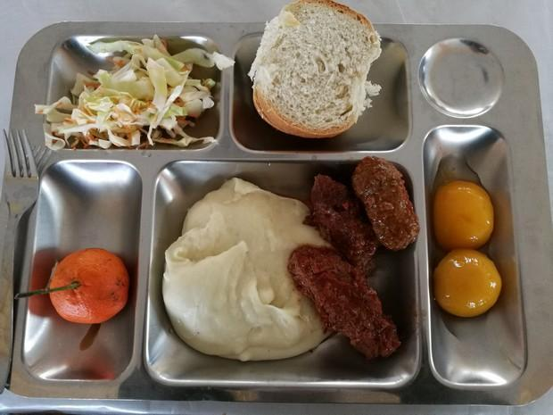

그리스군에서는 2026년부터
일반 군복무하는 사병 월급은 50유로(7만 4천원)
국경 지역 복무는 100유로라고함(14만 8천원)
잠자리랑 숙소, 식사도 개선하긴 한다는데
그리스 징집병 생활관
이불이나 침실에 곰팡이가 피거나 온수가 안나오거나 에어컨이 없거나 하다는듯

그리스군 사병 급식
양이 부족하고 식중독이 발생하고 그런다는듯
+로 그리스군은 물을 하루 필요치만큼 안줘서 월급(50유로)으로 사먹어야된다함
모든 그리스 남성은 12개월 군대 복무해야 하는데
당연히 취급이 저따구니 불만이 많지만
높으신 분들은
"터키가 그리스 점령하길 바라는거냐? 터키 막아야되는데 처우 좀 안좋다고 징징거리지마라!"
라는 마인드라서 개선이 더디다는듯
뭐 한국으로 치면 일본이랑 공중전 직전까지 가고 하는 상황이니까 그냥 아가리시키네 ㅋㅋㅋㅋ